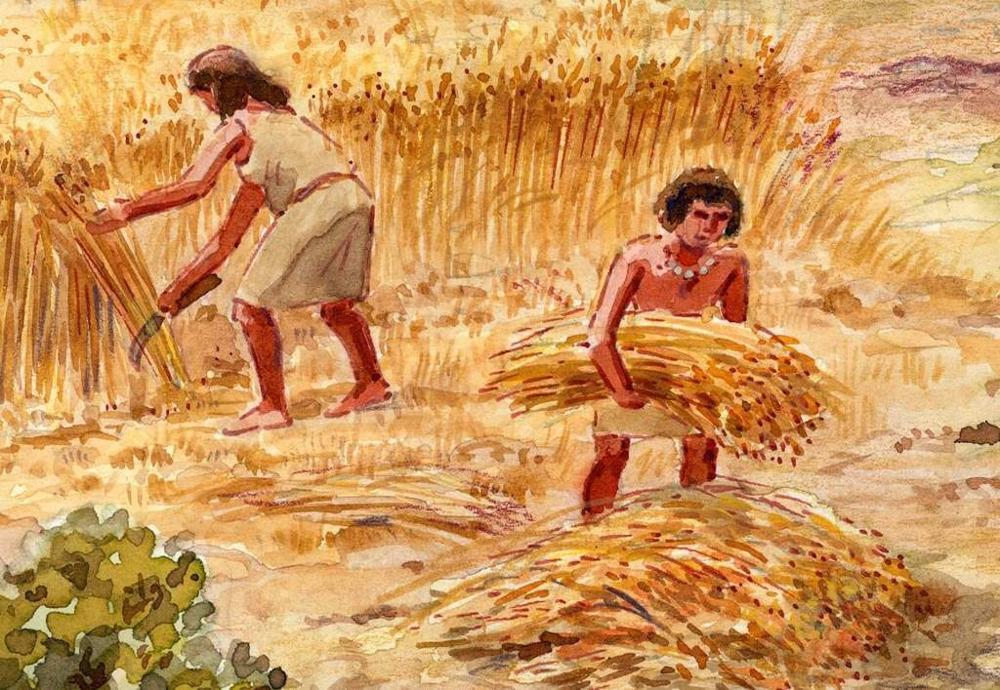
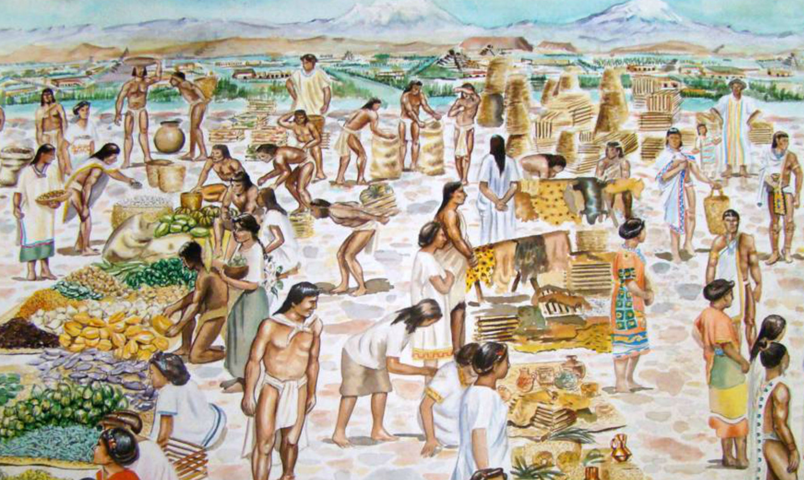
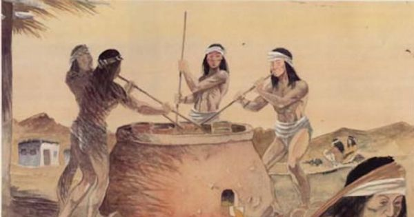
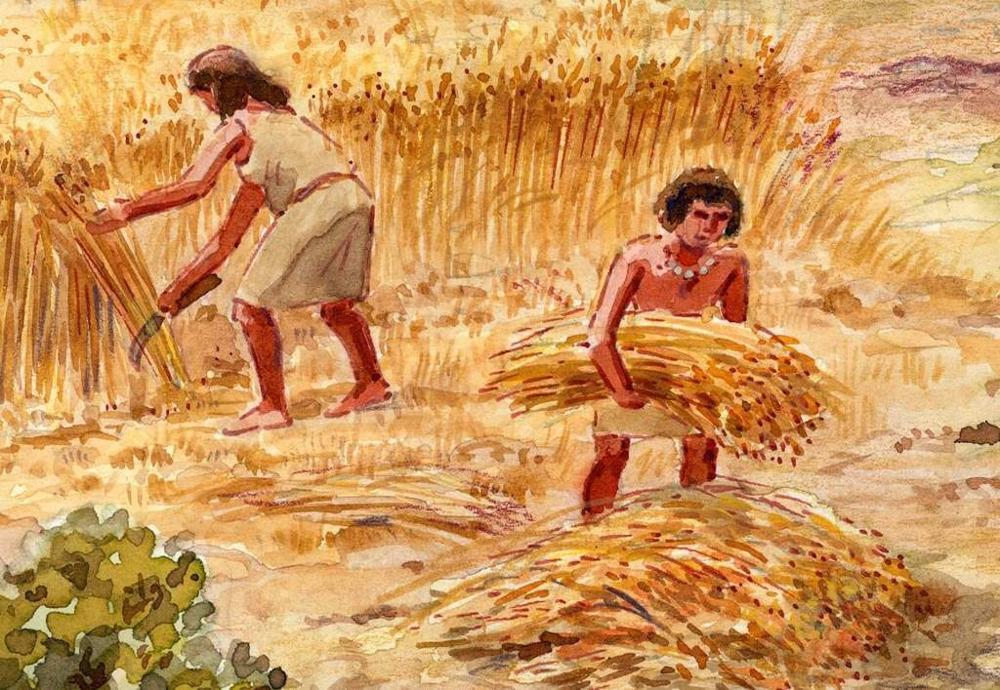
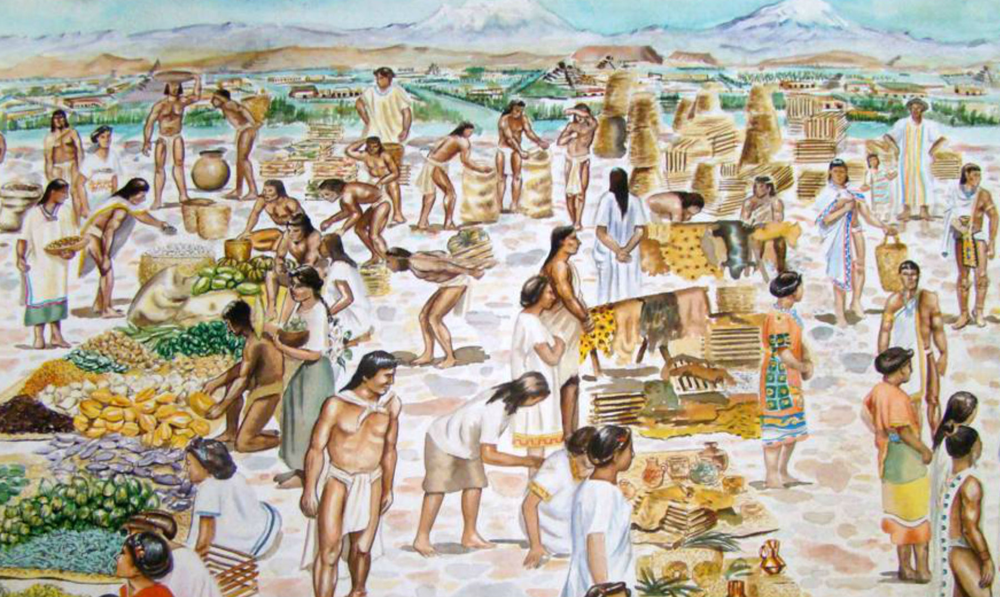
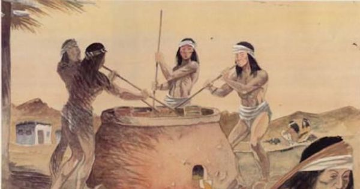

La agricultura es la explotación metódica de los suelos. Gran parte de los productos agrícolas son consumidos más o menos directamente, sobre todo en las zonas en las que predomina la agricultura de subsistencia. En otros lugares, los productos agrícolas son utilizados en una amplia gama de industrias, desde las de obtención de alimentos derivados y fibras textiles, hasta las del sector químico y manufacturero.
|
Por miles de años y hasta fines del siglo XIX la minería subterránea dominó la extracción de cobre y se caracterizó por ser una faena controlada por los reinos de turno, además de ser un trabajo pesado y peligroso. Por el alto valor estratégico que ostentaban los metales, en especial el cobre, la minería y la metalurgia pasaron a ser sectores muy importantes dentro de las economías y, en algunas regiones, llegaron a ser los principales contribuyentes del PGB. En torno a esta actividad se crearon cuentos, leyendas y tradiciones que se ven reflejadas en la historia y la mitología de las diversas culturas del orbe.
|  





La ganadería es la cría de ganado; el conjunto de ganado de una explotación ganadera, o la propia explotación ganadera. Tiene como objetivo la producción de animales, generalmente domésticos, para obtener carne y derivados, como la leche, huevos, cuero, lana, etc. Está íntimamente relacionada con la agricultura, a través de la producción de pastos, granos y forrajes para la alimentación adecuada de los animales.
Los historiadores sitúan los orígenes del comercio en el Neolítico, pues los hombres de aquel entonces utilizaban el trueque como actividad comercial. Los intercambios se basaron principalmente en elementos para sobrevivir, caso de alimentos o pieles para calentarse del frío, entre otros.